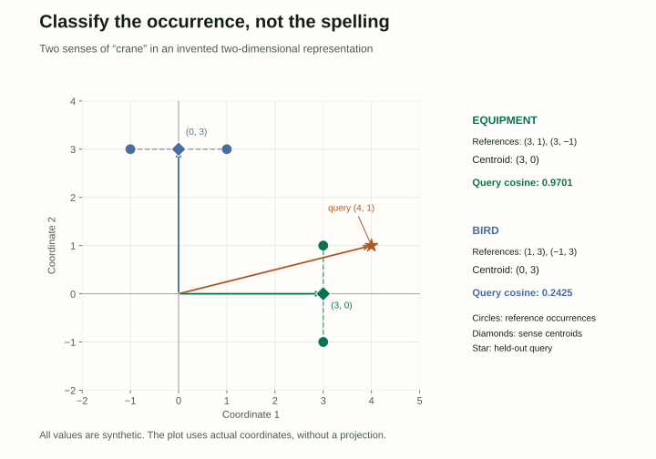

10 / Looking inside the computation
Interpretability: What a Representation Reveals, and What a Model Uses
A classifier can recover a grammatical label from a model’s hidden state. Does that mean the model uses grammar to make its prediction? We need a second experiment to answer the second question.
The August 19, 2026 Chapter 10 is partial. Its written material covers contextual embeddings, word senses, probing, logit lenses, and induction heads. Sections 10.4 and 10.5 currently contain headings only. This companion explains the available material with original examples; the small intervention lab is a supplemental teaching model, not a result from a real language model.
Read the embeddings, transformer, and masked-model companions first if vector representations or hidden states are unfamiliar. Here, “interpretability” means investigating representations and computations with evidence precise enough to support a particular claim.
1. “The embedding” is not a complete specification
A static lookup gives the same vocabulary item the same initial vector. A contextual representation depends on the surrounding input and the computation performed so far. In “The crane lifted the beam” and “The crane spread its wings”, the target spelling is identical, while its surroundings support different interpretations.
There is also more than one representation for an occurrence. We could extract the residual stream entering layer four, an attention head’s output, a feedforward output, or the final normalized hidden state. These objects have different meanings in the computation. Write down the model checkpoint, layer, component, and token position before measuring anything.
Suppose the tokenizer splits the target into multiple pieces. Choosing the first piece, the last piece, or the mean of their vectors creates different features. Combining several layers creates another representation. None is automatically the correct answer for every analysis. Keep the extraction rule fixed when comparing examples.
Visibility matters too. A causal model’s representation at crane cannot use lifted the beam if those words occur later. A bidirectional encoder can use that right context. To compare the two, either choose a position with comparable available evidence or make the differing contexts part of the question. Otherwise, a seeming difference in semantic ability may just be an information-access difference.
2. Classify a word sense with a small reference set
Word sense disambiguation chooses a sense from a specified inventory for a word occurrence. Our tiny inventory has two senses of crane: equipment and bird. Real inventories can distinguish meanings more finely, and not every distinction has a sharp boundary in ordinary use.
Freeze an encoder and extract a vector for every labeled training occurrence. Average the vectors belonging to each sense to form a centroid. For a new occurrence, extract its vector with the same procedure and choose the sense whose centroid has the highest cosine similarity.
predicted sense = argmaxs in the target word’s inventory cos(hquery, centroid(s))
Here is a fully invented two-dimensional example. Equipment occurrences have vectors (3, 1) and (3, −1), giving centroid (3, 0). Bird occurrences have vectors (1, 3) and (−1, 3), giving centroid (0, 3). These are chosen numbers for explaining the method, not measured embeddings from an actual model.

For query vector q = (4, 1), the cosine with equipment is 12/(3√17) = 4/√17 ≈ 0.9701. The cosine with bird is 3/(3√17) = 1/√17 ≈ 0.2425. Equipment wins. The score 0.9701 is a geometric similarity, not a calibrated 97.01% probability that the sense is correct.
Test on labeled occurrences that were not used to create the centroids. Keep near-duplicate passages or shared documents on the same side of a split. Compare with a most-frequent-sense baseline, and report missing senses rather than silently dropping difficult cases. A sense with no reference examples needs an explicit fallback or another source of evidence.
This experiment tests whether the chosen representation is useful for this classifier. It does not prove that the language model internally consults a discrete sense inventory or computes these centroids. A useful external readout and the model’s own algorithm are different objects.
3. High cosine can come from a shared offset
Contextual vectors need not fill their space evenly. They can share large components, so many unrelated pairs point in similar directions. This property is often discussed as anisotropy. A high average cosine can make raw similarity scores difficult to interpret.
Consider four reference vectors: (9, 1), (9, −1), (11, 1), and (11, −1). Their coordinate-wise mean is (10, 0). Using the population convention, both coordinate standard deviations are 1. Before transformation, the first two vectors have cosine (81 − 1)/(81 + 1) = 80/82 ≈ 0.9756. Their large shared first coordinate dominates the comparison.
σⱼ = √[(1/N) ∑ᵢ (hᵢⱼ − μⱼ)²]
zᵢⱼ = (hᵢⱼ − μⱼ) / σⱼ
Standardization turns those first two vectors into (−1, 1) and (−1, −1). Their dot product is zero, so their cosine is 0. We changed the geometry by removing the shared offset; we did not discover the vectors’ “true meaning.” A downstream evaluation must tell us whether that transformation is helpful.
Divide by the standard deviation, as the equation shows, rather than the variance. Fit those statistics on a defined reference collection and reuse them for held-out examples. A zero-variance coordinate requires a policy, such as dropping it; a resulting zero vector still has undefined cosine. Very small variances can also amplify noise.
There is no universal rule that a particular layer, pooling scheme, or normalization produces the best semantic metric. Similarly, a two-dimensional visualization can distort neighbors and distances. Use the original vector space for numerical claims, and describe a projection as an exploratory picture.
4. Train a reader of a frozen representation
A probe is a model trained to predict an annotation from another model’s internal state. To ask whether part-of-speech information is accessible at layer six, collect layer-six vectors with part-of-speech labels, freeze the original model, and fit a classifier on those vectors.
The distinction from ordinary fine-tuning is important. The base model’s weights stay fixed; only the probe learns. If you update the base model to make the labels recoverable, you have changed the object you intended to study. Use a held-out split to measure the fitted probe, just as you would for any classifier.
One probe might be linear: P(label | h) = softmax(Wh + b). Another might be a small MLP. A stronger reader can recover more complicated functions of the representation, but it can also learn more from the probing dataset itself. “High accuracy” is incomplete without the probe’s capacity, training data, and controls.
For example, if particular word types always receive the same label, a powerful probe might memorize lexical identities. A control task can assign stable, random labels to word types, testing how well the same probe memorizes arbitrary mappings. This is more informative about memorization than simply giving every repeated occurrence an independent random label. Hewitt and Liang (2019) develop this control-task approach.
Useful comparisons include an untrained or randomized representation, simple lexical features, multiple probe capacities, and the same probe at different layers. Keep the data splits and training budget comparable. If choosing among many layers, choose with development data and report the selected result on the held-out test set.
The supported claim is specific: this property is recoverable from this representation by this class of reader under these conditions. Failure of one linear probe does not prove the information is absent. Success does not prove the original model uses that information to produce its output.
5. A perfect readout can describe an unused coordinate
We can demonstrate the logical gap without training a large model. Let an invented hidden state have two coordinates, h = (g, c). An external grammatical probe reads only the first coordinate, while our toy next-token model reads only the second:
toy model: P(next token = “runs” | h) = sigmoid(c)
The other toy output token is “rests”, with probability 1 − sigmoid(c).
For h = (1, 0.5), the probe reports P(noun) ≈ 0.8808 and the model reports P(runs) ≈ 0.6225. Change g to −1: the grammatical readout changes sharply, but the next-token probability remains 0.6225. The model’s formula does not contain g. If we define the toy label as noun when g > 0 and non-noun when g < 0, thresholding the probe at 0.5 classifies every nonzero g correctly. It reveals a property that this output computation ignores; g = 0 is our unspecified boundary case.
Try the intervention
First change the stored coordinates. Then set one coordinate to zero and compare the original and intervened readouts. No model training happens here.
| Readout | Original | After intervention |
|---|---|---|
| Probe: P(noun) | 88.08% | 88.08% |
| Toy model: P(runs) | 62.25% | 62.25% |
In a real model, an ablation might zero a head’s output, remove a direction, or replace an activation. An output change establishes an effect under that specified intervention. It does not automatically tell us that we removed exactly one human concept: the same component can participate in many computations, and the intervention may produce an unusual hidden state.
Use controls matched to the question: compare similarly sized changes to other components, inspect whether the effect is specific to relevant examples, and repeat across prompts. No change is also ambiguous: another pathway may carry the same information, or the chosen metric may hide an effect. The toy lab has a complete known mechanism; interpreting a real model requires discovering and testing one.
6. Ask what the hidden state looks like to the output layer
A language model’s final readout maps a hidden state into vocabulary logits. A logit lens applies that readout at an earlier layer to obtain a vocabulary-level view of an intermediate representation. In an actual architecture, specify the final normalization and bias conventions used in the readout.
Here is a toy model with no normalization or bias. Its vocabulary has three tokens, and its output matrix has one row per token:
logits = Uh; probabilities = softmax(Uh)
For an intermediate state h = (1, 0), the direct lens gives logits (1, 0, −1). Suppose the remaining network rotates the state by 90 degrees: F(h₁, h₂) = (−h₂, h₁). The final state is then (0, 1), with logits (0, 1, 0). The two distributions disagree:
| Token | Direct intermediate lens | Actual final prediction |
|---|---|---|
| tea | 66.52% | 21.19% |
| coffee | 24.47% | 57.61% |
| water | 9.00% | 21.19% |
This is a coordinate mismatch, not a contradiction. The earlier representation was never required to be a finished output state. A lens can provide useful clues, but a sequence of changing top tokens is not automatically a faithful transcript of the model’s reasoning. These are readouts at one token position across depth, not tokens the model generated over time.
The draft also discusses a Jacobian lens, which uses information about the downstream computation. The local idea is that a small change Δh around a chosen state h₀ produces approximately JF(h₀)Δh in the final hidden state. With our linear output, the logit change is approximately UJF(h₀)Δh. In the rotation example, that Jacobian is exactly the rotation matrix; in a nonlinear model, the approximation is local and depends on the evaluation point.
The draft’s J-lens uses derivative information averaged over contexts; the single-state formula above isolates its local mathematical idea rather than specifying that full procedure. A derivative-based readout can therefore account for transformations that a direct lens ignores. It still needs validation: approximation error, the chosen contexts, and the measured output all matter. A derivative is a local sensitivity, not a complete explanation of a finite intervention.
7. Trace how a repeated pattern could be completed
Consider the token sequence dax red mog blue dax. A pattern-completion mechanism might predict red because it followed the previous dax. The spellings are arbitrary: the useful information is the repeated relationship inside this particular context.
An induction head is an attention-based component associated with this kind of prefix matching and copying. A simple two-layer explanation has two roles. An earlier head moves information about a previous token into the representation at the next position. A later head can then match the current token against those previous-token cues and read the associated continuation.
This explanation is more specific than saying the model “remembers the pattern.” It identifies a query–key match, a value carrying relevant evidence, and an output effect. Olsson and colleagues (2022) investigate induction heads and their connection to in-context learning. Their hypothesis about broader in-context learning should not be turned into a claim that all prompting behavior is explained by one circuit.
To investigate the mechanism, use many sequences with controlled repeated prefixes, measure attention to the expected earlier continuation, and measure its effect on next-token logits or loss. Ablating candidate heads can add causal evidence, but compare with control ablations. A behavioral pattern on one sentence is too little evidence to identify a mechanism.
Throughout this inference-time process the learned weights can stay fixed. The activations change as the context supplies a new association. This is compatible with in-context adaptation without gradient-based parameter updates, a distinction developed in the first companion.
Check your understanding
Does a strong word-sense classifier prove the model uses discrete dictionary senses?
No. It shows that the extracted vectors support the specified external classification procedure. The model may represent useful distinctions continuously without consulting that inventory or those centroids.
A probe predicts a property perfectly. What additional question should you ask?
Ask whether the model’s output depends on the corresponding information. Our toy model is a counterexample: the probe reads g, while the model reads only c. In a real model, design and control interventions rather than inferring use from readout accuracy alone.
Why can standardizing embeddings change cosine similarity?
Centering changes vectors’ directions relative to the origin, and coordinate-wise scaling changes the geometry. It is not the same as multiplying every vector by a positive scalar, which preserves cosine.
Does the lens’s early top token have to be the model’s final answer?
No. The remaining network can transform the hidden state. Our rotation example changes the most probable token from tea under the direct lens to coffee under the actual final readout.
In the induction diagram, does the current dax position attend to an unknown future red token?
No. It attends backward to the earlier red position, whose representation can carry information about its preceding dax. Evidence for red is then used to influence the next-token prediction at the current position.
Source and scope
Daniel Jurafsky and James H. Martin, Speech and Language Processing, third-edition draft, August 19, 2026. This article follows the written portions of Chapter 10: contextual embeddings and word senses (§10.1), probing (§10.2), logit and Jacobian lenses (§10.3), and induction heads (§10.6). The numerical examples and diagrams are original. The intervention counterexample supplements the draft’s explanation of why probe success does not establish causal use.
The source’s sparse-autoencoder and causal-technique sections are not yet developed. They remain future source material, and this page should be revisited when that chapter expands. For now, carry forward a precise habit: state the representation, the measurement, the control, and the strongest claim those observations support.